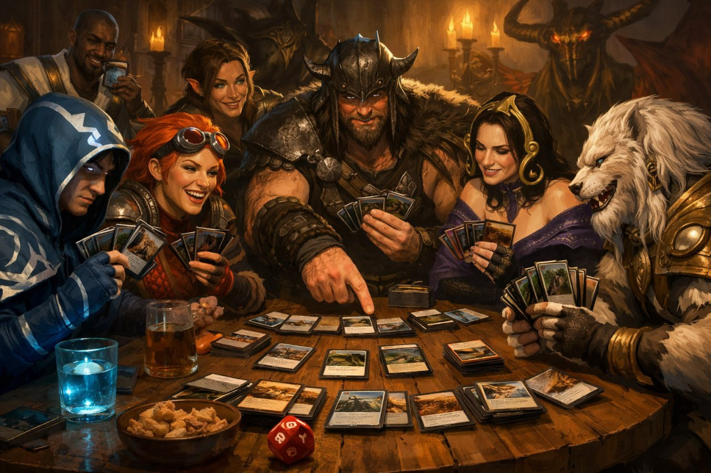

Axt-ion pur: Der erste Seat-Draft für Slaughter Games 6 startet!

Macht euch bereit, eure Äxte zu wetzen, denn die Slaughter Games 6 bringen eine Neuerung, die alles verändert! Zum allerersten Mal in der Geschichte der Spiele starten wir mit einem Seat-Draft... Weiterlesen